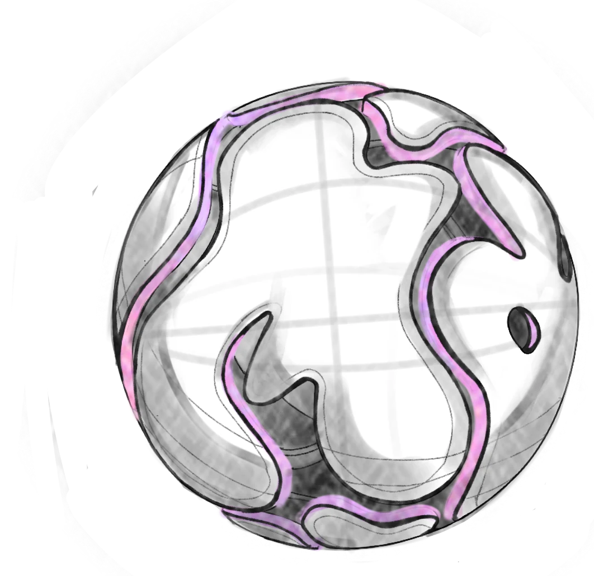
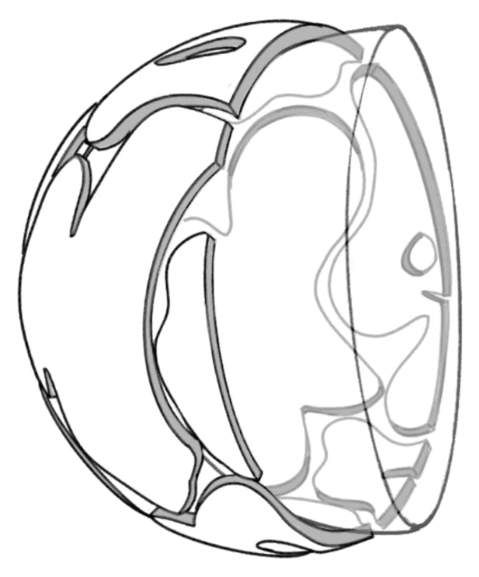
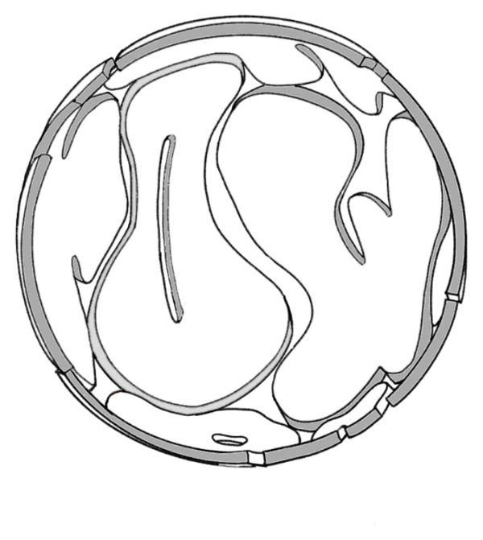
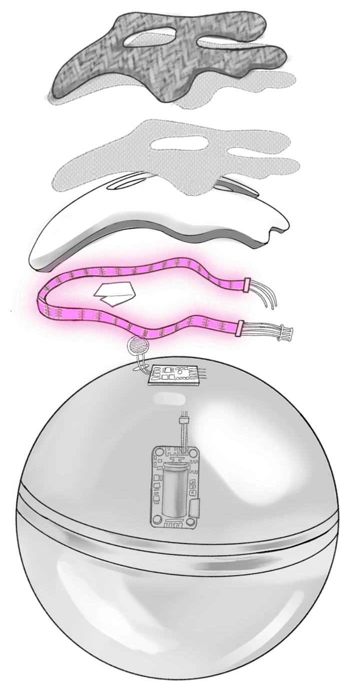
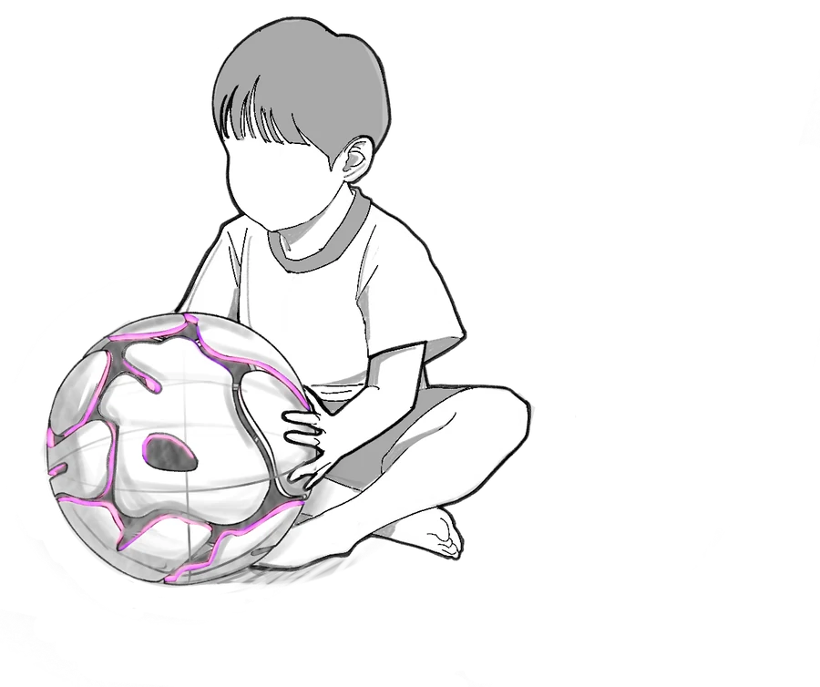
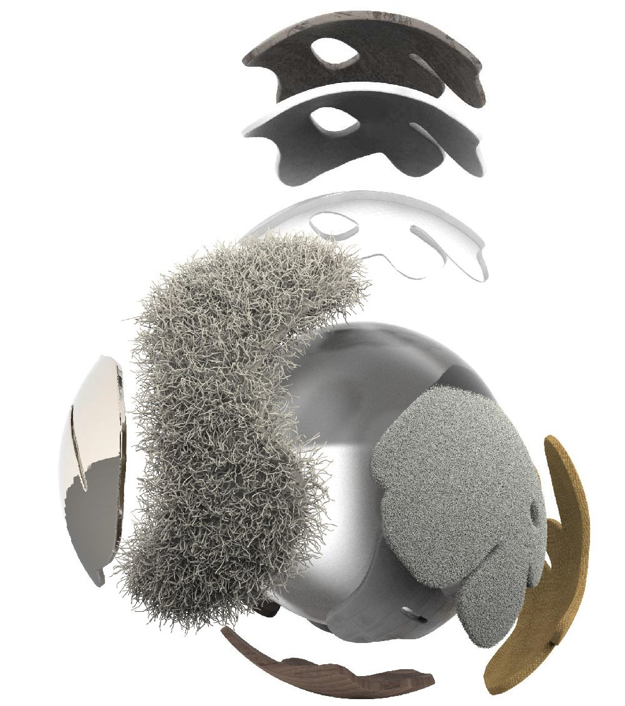

A simple ball
A ball is easy to understand. Children can press it, squeeze it, and roll it.

Interior structure


Single-module structure

Play scenario


How it is built
- 1Fabric module
Each module’s surface is a different material, some sensitive and some not.
- 2Velcro
The fabric attaches to the module with Velcro, so it is easy to replace.
- 3Light strip
Each module has its own light strip, which shows when it is triggered.
- 4Inner sphere
Sensors and parts sit on the inner surface of a clear sphere.
- 5Pressure
A press passes through the module to the sensors on the sphere.